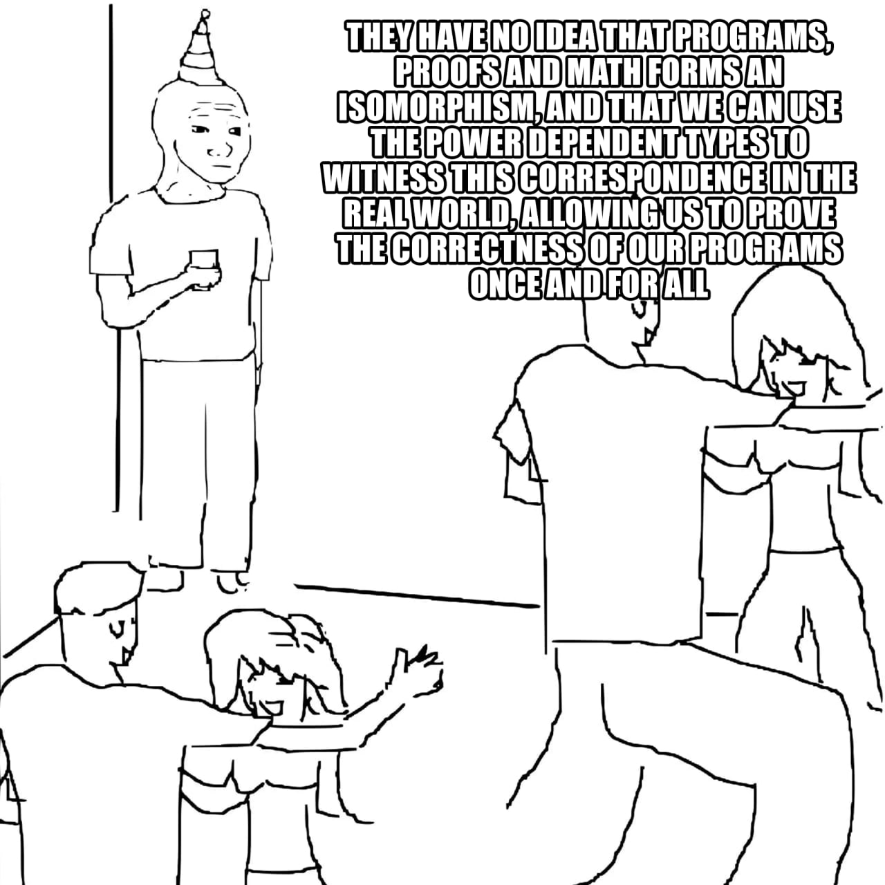
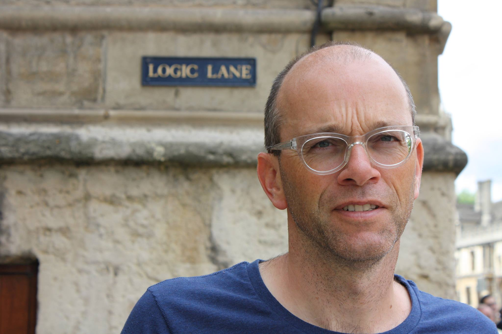
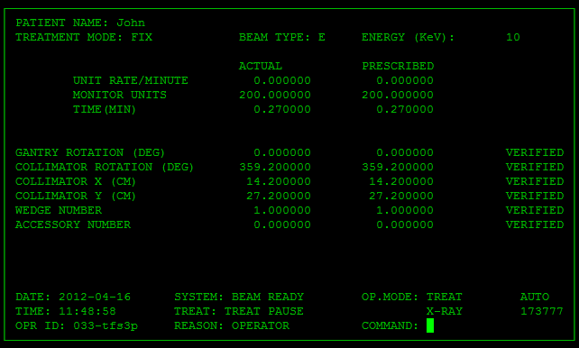
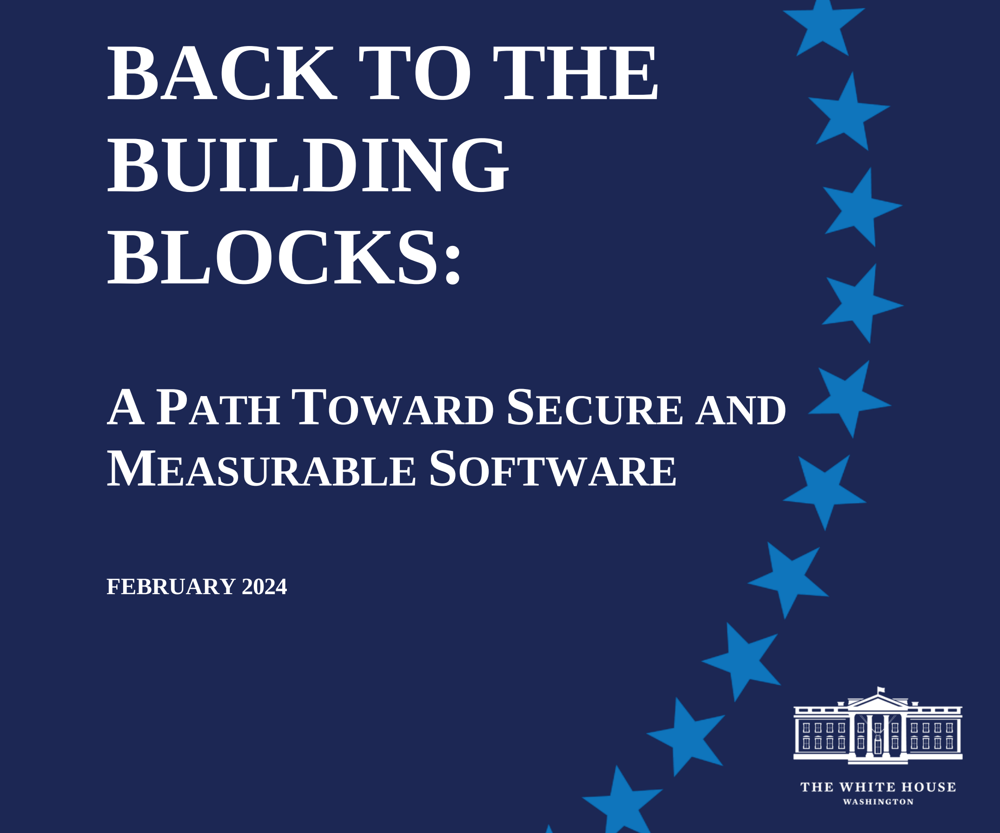

Em todas as aulas dessa disciplina, eu vou estar, explicita ou implicitamente, tentando convencer vocês de que usar métodos formais para verificar sistemas complexos é importante.
Contudo, pessoas diferentes tem visões diferentes, e tem muita gente de respeito por aí falando da importância de métodos formais. Essa aula vai apresentar as respostas de outras pessoas à pergunta: Por que e pra que métodos formais?
Eu posso pensar como na figura abaixo, mas cada pessoa se motiva de uma forma diferente (por exemplo, ver Moving Motivators).


O impacto que um bug pode ter varia muito de acordo com o tipo de sistema.
Vamos ver alguns exemplos de bugs que tiveram um impacto muito grande. Esses exemplos foram dados pelo professor Joost-Pieter Katoen em uma aula introdutória a model checking (KATOEN, 2013).

break incorreto em C (deveria sair de um if, mas estava saindo de um switch), que fez os computadores reiniciarem em cadeia a cada 6s.

Even if engineers build with memory safe programming languages and memory safe chips, one must think about the vulnerabilities that will persist even after technology manufacturers take steps to eliminate the most prevalent classes. Given the complexities of code, testing is a necessary but insufficient step in the development process to fully reduce vulnerabilities at scale. If correctness is defined as the ability of a piece of software to meet a specific security requirement, then it is possible to demonstrate correctness using mathematical techniques called formal methods. These techniques, often used to prove a range of software outcomes, can also be used in a cybersecurity context and are viable even in complex environments like space. While formal methods have been studied for decades, their deployment remains limited; further innovation in approaches to make formal methods widely accessible is vital to accelerate broad adoption. Doing so enables formal methods to serve as another powerful tool to give software developers greater assurance that entire classes of vulnerabilities, even beyond memory safety bugs, are absent.
While there are several types of formal methods that span a range of techniques and stages in the software development process, this report highlights a few specific examples. Sound static analysis examines the software for specific properties without executing the code. This method is effective because it can be used across many representations of software, including the source code, architecture, requirements, and executables. Model checkers can answer questions about a number of higher-level properties. These algorithms can be used during production; however, they are limited in their scaled use due to their computational complexity. Assertion-based testing is a formal statement of properties carried in the code that may be used to cross-check the code during testing or production. These generated proofs allow for faults to be detected much earlier and closer to the erroneous code, rather than tracing back from externally visible systems failures.
There are two ways software engineers can use these techniques across software and hardware. First, formal methods can be incorporated directly into the developer toolchain. As the programmer builds, tests, and deploys software, the compiler can automate these mathematical proofs and verify that a security condition is met. Additionally, the developer can use formally verified core components in their software supply chain. By choosing provably secure software libraries, developers can ensure the components they are using are less likely to contain vulnerabilities.
Formal methods can be incorporated throughout the development process to reduce the prevalence of multiple categories of vulnerabilities. Some emerging technologies are also well-suited to this technique. As questions arise about the safety or trustworthiness of a new software product, formal methods can accelerate market adoption in ways that traditional software testing methods cannot. They allow for proving the presence of an affirmative requirement, rather than testing for the absence of a negative condition.
While memory safe hardware and formal methods can be excellent complementary approaches to mitigating undiscovered vulnerabilities, one of the most impactful actions software and hardware manufacturers can take is adopting memory safe programming languages. They offer a way to eliminate, not just mitigate, entire bug classes. This is a remarkable opportunity for the technical community to improve the cybersecurity of the entire digital ecosystem.
Writing is nature’s way of letting you know how sloppy your thinking is. –Dick Guindon
Plantas nos permitem pensar com clareza sobre o que estamos construindo. Antes de escrever código, nós deveriamos escrever uma “planta” - em software, uma especificação.
But few engineers write specs because they have little time to learn how on the job, and they are unlikely to have learned in school. Some graduate schools teach courses on specification languages, but few teach how to use specification in practice. It’s hard to draw blueprints for a skyscraper without ever having drawn one for a toolshed.
Uma dica é evitar usar o código como base para escrever especificações. Arquitetos não fazem as plantas usando tijolos.
Formal methods are an incredibly powerful tool. The biggest barrier to using them, in my opinion, is education. FM requires a different mindset from coding and sometimes people have trouble building the intuition. There’s also an implicitly-assumed set of math skills that are easy to learn but hard to realize you need to learn.
Quanto antes os bugs são encontrados, menos dano eles causam.
Formalizando designs, é possível simplificar os sistemas antes de começar a desenvolver.
Mesmo em sistemas legados, e muito útil achar bugs antes que os usuários os achem.
Mais detalhes:
Temos um problema aqui, conseguem ver?
A Alice não ofereceu o sofá para o Bob, mas o sofá era dela e passou a ser do Bob.
Em (WAYNE, 2020), o Hillel apresenta uma especificação em TLA+ de 15 linhas para um sistema análogo a esse e econtra o bug usando um model checker.
Alguns pontos negativos: